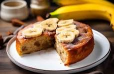

Bolo de Banana
link do autor da receita
Modo de Preparo
- Em um recipiente, misture as bananas, os ovos e o açúcar.
- crescente o óleo, o leite ninho, a farinha de trigo, a canela, o fermento em pó e misture bem.
- Em uma forma retangular (30 x 20 cm) untada com óleo e polvilhada com farinha de trigo, despeje a massa e leve para assar, em forno médio (180°C),
preaquecido, por cerca de 35 minutos ou até que, ao espetar um palito, este saia limpo.
Desenforme e polvilhe com o açúcar e a canela misturados.

Ingredientes
- 06 bananas maduras.
- 01 xícara de óleo.
- 03 ovos.
- 02 xícaras de açúcar.
- 02 xícaras de farinha de rosa.
- 01 colher de fermento em pó.
| Dificuldade |
Porções |
Total |
| Fácil |
16 |
40 min |
Utensílios